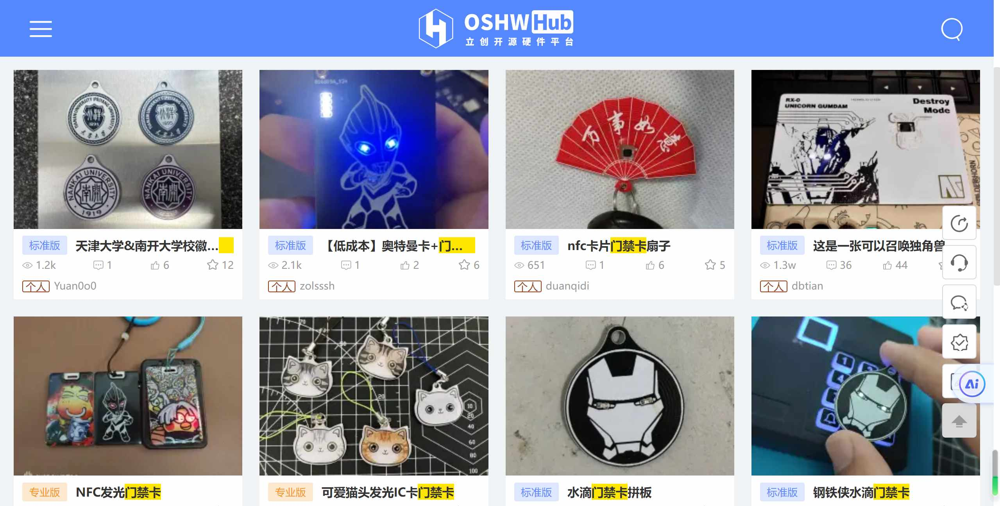
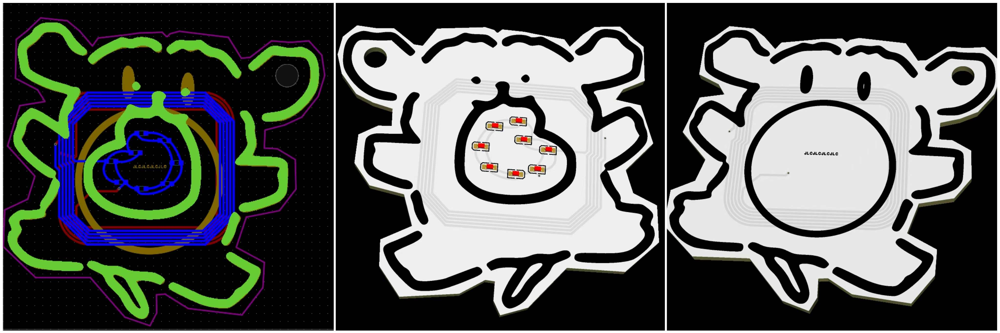
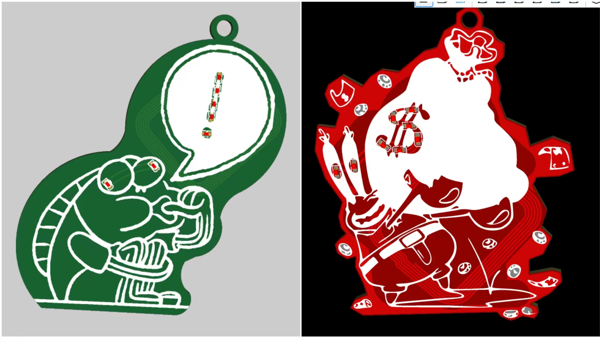
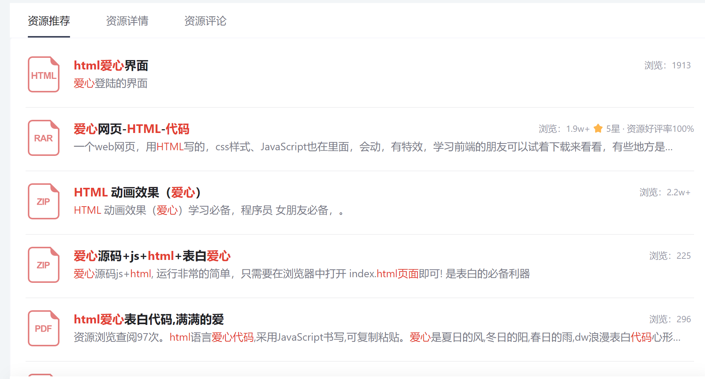
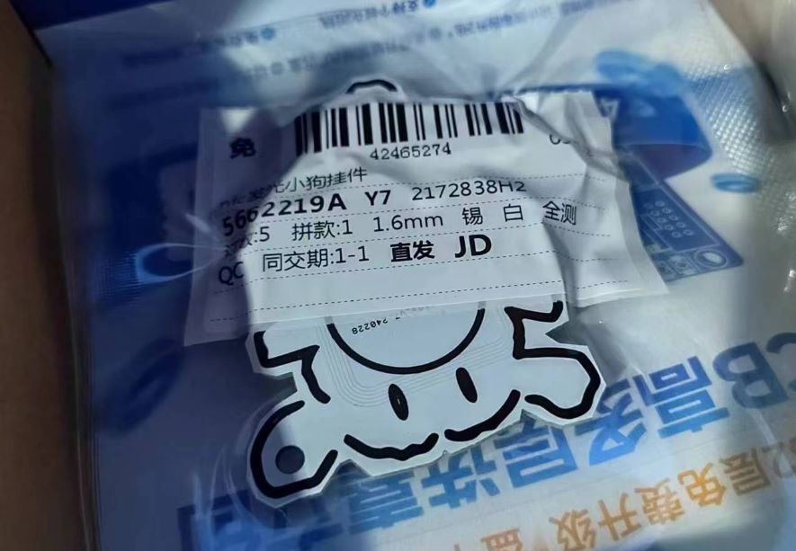
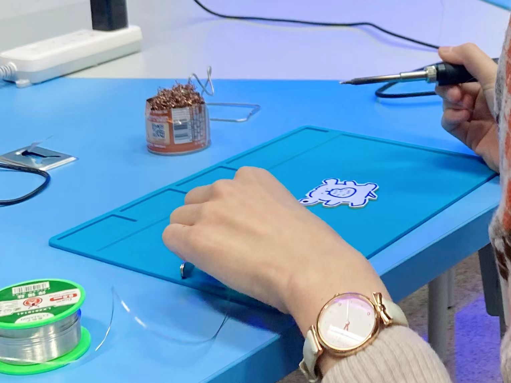
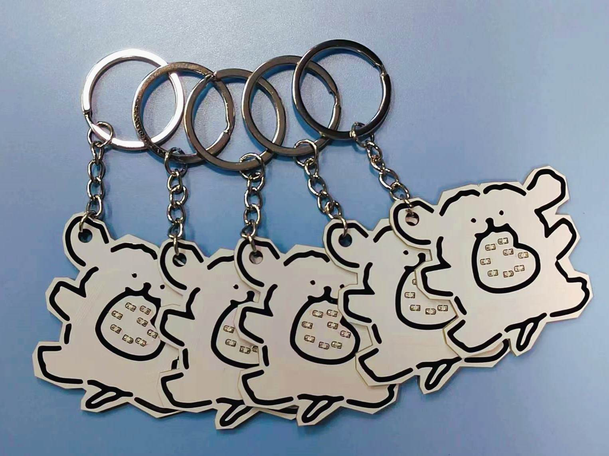
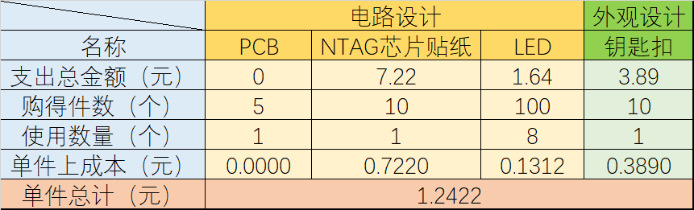
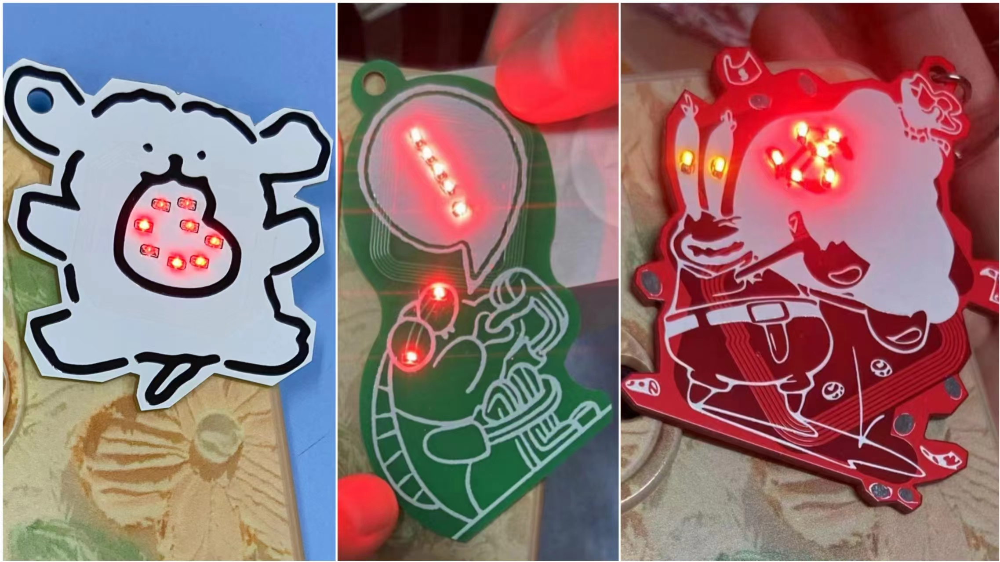
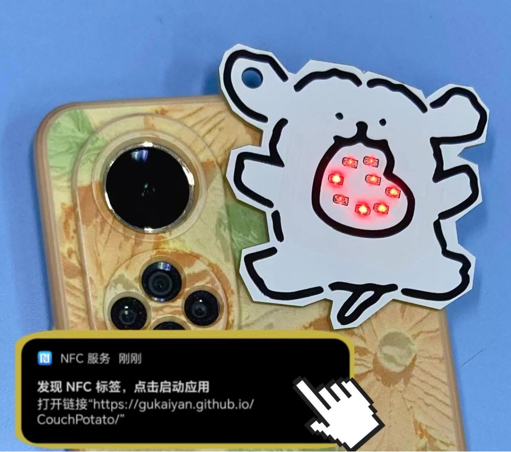

哇！恭喜你发现了这份以有趣为主的设计手记！
小G在这里记录下了“睿智的眼神”挂件的前世今生。这是小G第一次独立完成一个完整“产品”的全流程设计。从突发奇想，到认真开始考虑可行性和实现方式，再到芯片选择、电路设计、网页设计，再到最后的外观设计，每一步都由小G主导。新手上路，每一步都是深思熟虑后的小心试探，也因此每一步都有不少收获。小G非常感谢Z院士和H院士在电路和网页设计方面的帮助和建议。小小挂件能够以如此优雅的状态被呈现出来，二位院士功不可没。
设计手记从以下方面展开，点击跳转~
1、灵感来源 2、硬件设计 3、网页设计 4、电路焊接 5、成品测试 6、经费计算 7、版本迭代 8、使用说明1、灵感来源
公元2024年2月27日下午，小G与H院士、Z院士在“智能卡系统”课上认真听讲。三人学习到了智能卡的发展过程及其内部结构等知识。
小G意识到门禁卡、饭卡的电路结构是非常简单的，就是线圈连NFC芯片，于是萌生自己制作智能卡的想法。小G在课堂上迫不及待的打开了JLC，拉着身旁的H院士开始深入学习。二人认真学习每一个开源样板，认为将智能卡加上LED的想法最为有趣。由此，制作一个“一刷NFC就能亮灯的门禁卡挂件”的想法诞生。
小G想：非电子相关专业的人可能会对于卡片上没有电池供电，却有小灯在发光的现象感到惊讶吧:)
2、硬件设计
芯片选择
小G开始积极寻找NFC芯片，但能找到的大多太难焊（QFN封装）、焊上太丑、太贵（好几块钱一个），而且需要使用读卡器才能读写卡片。小G认为它们不符合一个小挂件的应有成本价格标准，并不满意。经过一晚上的全网搜索，她发现了廉价好物CUID芯片贴纸、NTAG21x贴纸（碰碰贴）。它们外形优美，读写仅需具有NFC功能的手机即可。

购买贴纸甚至连NFC芯片的线圈都不用自己画了，只需在板子上画LED和对应的线圈，相当于直接购买了电路的核心功能实现部分。小G认为“不管黑猫白猫，能抓住耗子就是好猫”，不必太纠结是否全部电路都由自己设计（毕竟她以前也没少抄别人的板子）。不过，在这样的情况下，仅仅让门禁卡能发光就显得有些无聊了。小G仔细查阅两种芯片贴纸的说明，发现NTAG贴纸不仅可以制作门禁，还有控制播放歌曲、显示文字、跳转到至网页等新鲜玩法。果断选择NTAG215芯片贴纸，并决定在芯片中写入自己写的网页。
PCB设计
次日中午，小G与H院士、Z院士共进午餐，就发光电路的设计细节展开讨论。
小G首先向Z院士咨询了LED的功率、颜色及可以带动几个LED等小问题，均得到靠谱的回复。
小G随后提出了困扰她一上午的关键问题“线圈是圈数越多越好，还是应该计算后画成特定的与NFC匹配的样子”。经过一番讨论，Z院士建议匹配。具体方法为：先用微波实验中的方法在ADS进行版图仿真，得到所画线圈的Z参数，计算出电感，再通过已知的NFC信号频率13.56MHz计算出谐振电容值，通过LC谐振电路尽可能多地接收电磁波能量。小G很认可这个方法，但此法实在是太繁琐了，不确定因素过多，调整起来实在费时费力。小G又追问了若干次实操时会遇到的问题，得到了很多次令人满意的满意答复“不好说，你试试，xx不行就换成xx嘛（笑声）”。H院士也笑眯眯地夸奖道：“小G可是最擅长仿真的”。一瞬间，小G全懂了。
于是，小G“思路清晰”地走进图书馆，开始画PCB。她熟练地处理起顶层底层丝印图片，只犹豫了几分钟就开始了一点点用多边形工具画板框。至于刚刚讨论过的线圈问题，只见她随意地画着圈，顶层底层都画了几圈后，接在了LED上。切，就这点频率，做什么仿真，小G坚信线圈差不多就能用。自信的小G飞快地画好了电路板，毫不犹豫地点击下单。

3、网页设计
既然小G已决定要自己写一个网站作为礼物的一部分，那么需要解决的问题就很清晰：网页内容和如何部署。
小G本想制作一个满屏鲜花爱心的表白网页，但发现已经有很多人写过，虽然他们写的网页外观大多数很土，但小G认为自己就算写的好看也没什么心意了。小G想了想自己最近的生活里有没有什么需要的，想要这样发掘用户需求。这果然是个好方法。小G立即意识到自己最近最常做的事就是摸鱼！她立即决定写一个“摸大鱼导航”网站，汇总多个摸鱼网，让收到礼物的人能够与她“千里共摸鱼”！
下面是网页的部署问题。众所不一定周知，如果想让自己写的网页被别人通过浏览器访问，需要购买域名，或是将网页部署到云服务器上。这两种方式的共同点是都要花不少钱，这显然不符合小G的心意。经过资料查阅，小G发现利用Gitee或Github都能免费部署自己的网页，喜出望外，立即写起了网页。
小G优先选择了Gitee，支持国产。此时已是29日，她从下午到晚上对CSDN上的教程言听计从，下载Git，驯服Git，并尝试使用Git上传了一个html文件。但她发现让大家能够访问网页需要进行实名认证。小G甚至特意跑回宿舍，手持身份证进行了认证。本以为后面就是等待认证通过即可，于是她当晚就写完了摸鱼导航网页。
但第二天，小G看到了大量Gitee实名认证时间过长的信息，大失所望，越看越生气。一气之下，她直接点开了GitHub。小G运气很好，竟然登录进去了！一顿操作猛如虎，这里不需要实名认证，仅花费十分钟就部署好了摸鱼导航网页。

小G向两位院士宣布了这个好消息后，开开心心地将网页URL写入了中午刚刚到货的小贴纸（芯片标签），还玩了好久小贴纸的其他功能。
4、电路焊接
等板子的这几天里，小G每天都在疯狂地刷新JLC下单平台的物流信息，一边刷一遍默念“板来，板来，板从四面八方来”和“再也不选白色阻焊了”。终于，在3月4日下午，她收到了心心念念的板子。
晚上，小G迫不及待地约上H院士、Z院士去焊接。三人在教三游荡许久，找到一间空教室，占领，有说有笑地准备开始焊接。小G拿出一片电路板和她购买的一条（100个）0603贴片红色LED，深吸一口气…这LED看起来实在是太小了，似乎比芝麻粒还要小一些，后悔当时没买0805的。考虑到如果焊接上第一个LED后不能点亮，可能是焊接问题、电路问题、二极管方向问题（后来仔细思考后发现不会有方向问题），难以判断。加之，Z院士提示白色阻焊在焊接时容易发黄变丑，小G不敢轻举妄动。于是委托Z院士焊接第一个LED。
Z院士技术高超，手法娴熟，迅速焊接好了一个LED。用手机NFC试探，LED以令人惊讶的亮度发出红光。小G非常激动。Z院士看了这亮度，对于此卡能带动全部8个LED很有信心，于是把全部LED都焊上了，果然LED全部亮起来啦！
小G接手焊接剩余的4块电路板，虽然不如Z院士焊接得那样完美，但都能用，爱心全部亮起！
由于小G在学校里没有钳子，在安装钥匙扣的时候只能用区区肉身与不锈钢开口环抗衡（硬掰），所以开口圈闭合得并不紧，但她真的尽力了……
5、成品测试
小G的荣耀手机NFC发射功率似乎格外的强。只要把挂件放在手机上，就会一直发光。甚至仅有电路板的挂件紧贴手机也可以亮起；贴了NFC芯片的挂件离手机有一段距离，小灯也可以亮起。不愧是挂件的主人，挂件非常听话。S同学的手机也很好用，但没有记录下品牌or型号。
H院士的苹果手机NFC发射功率就要弱很多，需要把小狗紧贴在手机上，来回移动，才能识别NFC标签。Z院士的小米手机效果相近。
虽然识别的灵敏度在不同手机之间存在差异，但当前测试过的手机都能完全实现功能。这次设计至此可以宣告成功咯！
6、经费计算
我可真是个省钱小能手！论1元可以做些什么↓
7、版本迭代
NFC挂件到目前为止一共设计并批量生产了3款。分别为：线条小狗、睿智的眼神、蟹老板。
线条小狗是第一个版本。这一版在制作过程中，小G仅仅抱有能用就行的态度，努力尝试，希望自己的第一个电子制作就能用。因此在线圈位置放置、布线方面、阻焊颜色选择、LED颜色选择等方面比较保守。
“睿智的眼神”是第二个版本。这一版在线条小狗已经成功的基础上进行了电路板曲线边框的尝试，并对钥匙扣开孔位置进行了优化。LED分别位于线圈的内外两侧也为电路布线带来了（可以忽略不计的）难度增长。
蟹老板是第三个版本。这一版在制作过程中，技术已经没有什么值得顾虑的。这一版进行了阻焊层开窗，让蟹老板的钱币更有金属光泽，更像钢镚，在LED颜色选择上也做了更加丰富的处理。
8、使用说明
正常使用说明
（1）打开手机NFC功能
（2）在手机【亮屏】状态下，将挂件贴在手机NFC区上
（3）看！LED被点亮了（没看到就重新刷卡）
（4）手机弹出链接，点击进入，和小G一起摸鱼吧！
不正常使用说明
如前文所述，NTAG标签不仅可以设置为跳转到链接，还可以设置为其他有趣的功能。如果想要自己设置小挂件的功能，可以下载“NFC Tools Pro”探索使用方法，其中的部分功能需要结合“NFC Tasks”软件才能设置。两款软件均可通过浏览器搜索下载。使用“NFC Tools Pro”可写入如下功能：

在自主探索之前，请务必记录一下摸大鱼导航网址：
https://gukaiyan.github.io/CouchPotatoV2/
否则就再也不能和小G一起摸鱼啦！